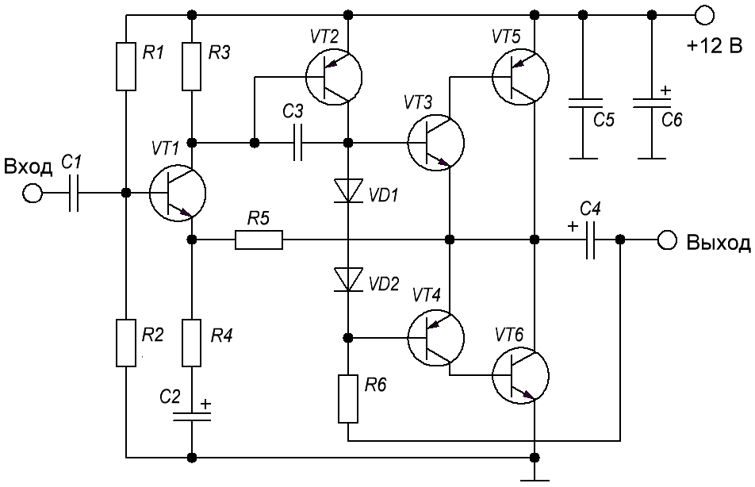

Усилитель звука на транзисторах
Схема усилителя(рис. 1) состоит из шести транзисторов и может развивать мощность до 3 Вт при питании напряжением 12 В. Этой мощности достаточно для озвучивания небольшого помещения.

Таблица 1
| Обозначение | Наименование | Номинал | Кол-во | Примечание |
|---|---|---|---|---|
| С1 | Конденсатор | 0,068 мкФ | 1 | пленочный |
| С2 | Конденсатор электролитический | 10 мкФ - 16 В | 1 | |
| С3 | Конденсатор | 100 пФ | 1 | |
| C4 | Конденсатор электролитический | 220 мкФ - 16 В | 1 | |
| C5 | Конденсатор | 0,1 мкФ | 1 | |
| C6 | Конденсатор электролитический | 1000 мкФ - 16 В | 1 | |
| R1 | Резистор постоянный | 16 кОм | 1 | |
| R2, R6 | Резистор постоянный | 33 кОм | 2 | |
| R3 | Резистор постоянный | 5,1 кОм | 1 | |
| R4 | Резистор постоянный | 470 Ом | 1 | |
| R5 | Резистор постоянный | 8,2 кОм | 1 | |
| R3 | Резистор постоянный | 5,1 кОм | 1 | |
| VD1, VD2 | Диод | 1N4148 | 2 | 1N4007, КД522 |
| VT1, VT3 | Транзистор биполярный | BC639 | 2 | |
| VT2, VT4 | Транзистор биполярный | BC640 | 2 | |
| VT5 | Транзистор биполярный | BD140 | 1 | КТ814 |
| VT6 | Транзистор биполярный | BD139 | 1 | КТ815 |
Транзисторы VТ5 и VТ6 на схеме образуют выходной каскад. Конденсатор С4, который подключается к коллекторам выходных транзисторов, отделяет постоянную составляющую сигнала на выходе. Поэтому данный усилитель можно использовать без платы защиты акустических систем. Даже если усилитель в процессе работы выйдет из строя и на выходе появится постоянное напряжение, оно не пройдёт дальше этого конденсатора и динамики акустической системы останутся целы. Нагрузкой служит динамик сопротивлением 4-16 Ом. Чем ниже его сопротивление, тем большую мощность будет развивать схема.
При настройке усилитедя разрыв одного из питающих проводов нужно включить амперметр для контроля потребляемого тока. Без подачи на вход сигнала усилитель должен потреблять около 15-20 мА. Ток покоя задаётся резистором R6, для его увеличения нужно уменьшить сопротивление этого резистора. Слишком сильно поднимать ток покоя не следует, т.к. увеличится выделение тепла на выходных транзисторах. Если ток покоя в норме, можно подавать на вход сигнал, подключать на выход динамик и приступать к прослушиванию.
Для воспроизведения стереозвука схему нужно собрать в двух экземплярах.
Если источник сигнала находится далеко от усилителя, подключать его нужно экранированным проводом для исключения помехи и наводоки.